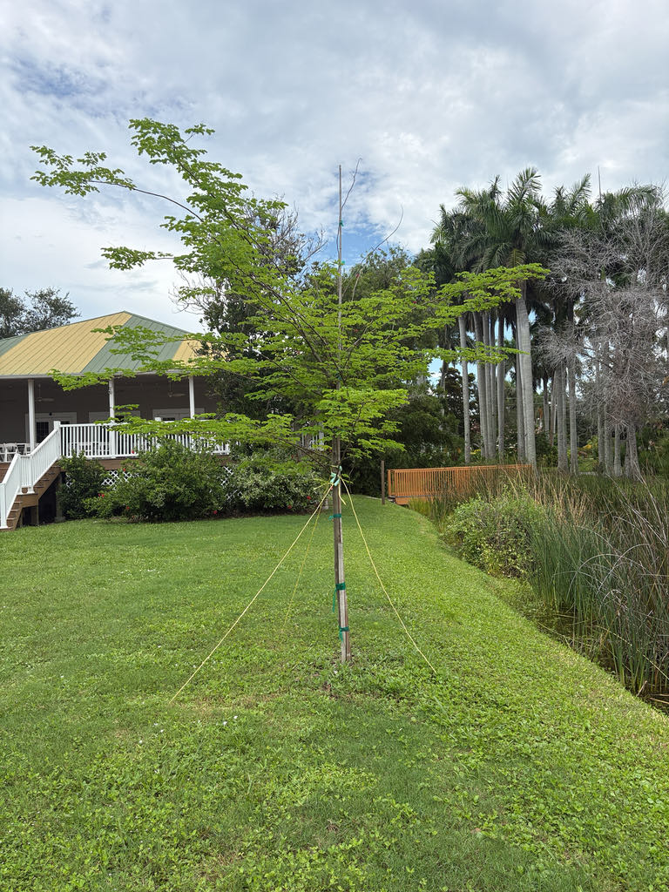

- The bark is the tree's real showpiece. As it matures, the outer rhytidome peels away in thin papery strips to reveal the living secondary cortex beneath — a mottled patchwork of tan, green, and gray that looks almost painted on. That green is not lichen or disease; it is photosynthetically active tissue, briefly unmasked before the next layer forms.
- The common name has nothing to do with flowers. It refers to the foliage: tiny paired leaflets arranged along slim stems create a fine, lacy curtain of green that ripples in a breeze. The whole canopy reads as a soft veil from a distance.
- In its home range of Colombia and Venezuela, this tree is known as granadillo or ebano — and its dense, handsome heartwood has been prized as a cabinet timber for centuries. In Florida, it never gets large enough to be a timber tree; here it earns its keep as an ornamental.
The Bridalveil Tree is native to the seasonally dry tropical forests of northern South America — primarily Colombia and Venezuela, where it grows under the name granadillo or ebano. Plants of the World Online (Kew) places its native range squarely in that Colombia-to-Venezuela corridor, with introduced populations in the Caribbean, Sri Lanka, and Uganda.
It arrived in Florida cultivation as an ornamental introduction and has become a quietly admired landscape tree in the southern half of the state. UF/IFAS published a full fact sheet on it (under its former name Caesalpinia granadillo) and rates it as suitable for a wide range of Florida landscape uses, from street plantings and parking-lot islands to specimen and shade trees.
- Libidibia punctata belongs to the subfamily Caesalpinioideae within the legume family — a group that also includes the royal poinciana, tamarind, and several other familiar tropical trees. The genus Libidibia itself contains just seven species, all native to the tropical Americas from Mexico to Argentina, and all adapted to seasonally dry conditions.
- The species has accumulated a long list of synonyms over the years — Caesalpinia punctata, Caesalpinia granadillo, Caesalpinia ebano, and several others — reflecting repeated taxonomic shuffling as botanists sorted the old Caesalpinia complex.
- The current placement in Libidibia was formalized following Gagnon et al., a landmark molecular phylogenetic study published in PhytoKeys in 2016 that reorganized the pantropical Caesalpinia group into 26 genera. The name most Florida gardeners and nurseries still use, Caesalpinia granadillo, is now formally treated as a synonym of Libidibia punctata under that system.
- UF/IFAS notes that the tree's fine-textured foliage and upright vase shape give it a canopy with few equals at its size class — tidy enough for tight urban spaces, refined enough for a specimen planting, and tough enough for a parking-lot median. It is also, the same source notes, not commonly available in nurseries, which may be part of why it hasn't achieved wider recognition.
The yellow summer flowers draw bees and other generalist pollinators, and butterflies visiting for nectar are a regular sight when the tree is in bloom. Because the Bridalveil Tree is a non-native species with no shared evolutionary history with Florida's native insect fauna, it does not serve as a documented larval host for any local butterfly or moth.
The small flat seed pods provide some foraging opportunity for seed-eating birds, and the dense canopy offers cover. Visitors looking for the park's best butterfly-larval-host plantings will find those among the native species collections.
Propagated primarily by seed. The tree is hermaphroditic — flowers carry both male and female parts — so a single tree can set seed without a pollination partner, though insect visitation improves fruit set.
Showy yellow blossoms appear from late spring through fall, clustered in upright racemes near the branch tips. Each flower has five petals and prominent stamens, giving the cluster a bright, airy look against the fine foliage.
Like all members of the subfamily Caesalpinioideae, the flowers are slightly zygomorphic — bilaterally symmetrical rather than radially symmetrical — a subtle structural detail that botanists will notice and that helps guide visiting pollinators.
Flat, smooth legume pods, roughly 2 to 3 inches long, ripen after flowering. Each pod contains a small number of seeds. The pods are not ornamentally significant and are not a food source.
Bipinnately compound — meaning each leaf divides into multiple pinnae, and each pinna carries rows of small, oval leaflets. The overall effect is exceptionally fine-textured, almost fern-like. The tree is described as evergreen but may drop its foliage briefly just before the summer bloom flush.
The trunk and main branches are one of the tree's most distinctive features. As the tree matures, the outer rhytidome — the accumulated dead bark layers — sheds in thin papery strips, exposing the green, photosynthetically active secondary cortex beneath and creating a mottled mosaic of tan, green, gray, and brown.
The tree typically branches from low on the trunk, producing several main stems and an upright vase-shaped crown.
Start at the trunk: look for the peeling, patchwork bark — tan, green, and gray — that makes this tree easy to identify once you know to look for it.
Then step back and take in the crown: a fine, lacy curtain of compound leaves on a vase-shaped frame. In late spring through fall, watch for clusters of yellow flowers near the branch tips — look closely and you'll notice each blossom is subtly asymmetrical, a hallmark of the legume subfamily Caesalpinioideae.
The pods that follow are flat and modest — easy to overlook once you've spotted the bark.
No documented toxicity to people, dogs, or cats. The pods and seeds are not a food source, but they are not known to be harmful. This is simply not a plant people eat — otherwise harmless.
The name granadillo causes persistent confusion in the timber trade, where it is applied to several unrelated tropical hardwoods — including species of Dalbergia, Platymiscium, and others — all prized for dense, richly colored wood. Libidibia punctata is part of that story in its home range, where the tree has been valued as a cabinet-quality timber, but 'granadillo' on a lumber tag in a U.S.
wood shop could refer to any of a dozen species.
UF/IFAS recommends beginning structural pruning early and repeating it every few years through the tree's first fifteen years. The goal is to prevent bark from becoming included in tight branch crotches — a condition that can lead to branch failure under load.
The fine bipinnately compound foliage does reduce canopy wind resistance, which helps during summer storms, but the tree's natural tendency toward low multi-stemmed crotches means those junctions need early training to avoid stem splits under high tropical wind loads.
Spacing main branches along a dominant trunk and keeping competing leaders in check will pay dividends in long-term structural integrity.


- © Sofia Linares (CC-BY-NC), via iNaturalist
- © Randall Carter (CC-BY-NC), via iNaturalist